This shows the derivative filter is properly catching the edges as I took images with vertical and horizontal
lines to see exactly what is happening.
From left to right.
1_imgg.jpeg
2_imgx.jpeg
3_imgy.jpeg
4_imgxy.jpeg
5_imgxy_s.jpeg
6_imgxy_bin.jpeg
7_imgxy_s_bin.jpeg
from utility import *
if __name__ == '__main__':
# TODO: all my images should be between 0 and 255 and are 3d no matter if black and white
image_number = 12
image_path = f"./images/{image_number}.jpeg"
output_path = "./render/part0/"
image = open_image(image_path)
print(f"image.shape: {image.shape}")
print(image.max(), image.min())
imgg = convolve_v1(image[:, :, 0], G, mode='same', boundary='symm')
imgx = convolve_v1(imgg, D_x, mode='same', boundary='symm')
imgy = convolve_v1(imgg, D_y, mode='same', boundary='symm')
imgxy = combine_images_gradient_magnitude(imgx, imgy)
imgxy_bin = threshold_image(imgxy, 10)
# shorter way
c1 = convolve_v1(G, D_x, mode="full", boundary='fill')
c2 = convolve_v1(G, D_y, mode="full", boundary='fill')
imgx_s = convolve_v1(image[:, :, 0], c1, mode='same', boundary='symm')
imgy_s = convolve_v1(image[:, :, 0], c2, mode='same', boundary='symm')
imgxy_s = combine_images_gradient_magnitude(imgx_s, imgy_s)
imgxy_s_bin = threshold_image(imgxy_s, 10)
save_image(output_path + "1_imgg.jpeg", imgg)
save_image(output_path + "2_imgx.jpeg", imgx)
save_image(output_path + "3_imgy.jpeg", imgy)
save_image(output_path + "4_imgxy.jpeg", imgxy)
save_image(output_path + "5_imgxy_s.jpeg", imgxy_s)
save_image(output_path + "6_imgxy_bin.jpeg", imgxy_bin)
save_image(output_path + "7_imgxy_s_bin.jpeg", imgxy_s_bin)
1.1 Finite Difference Operator
The code for this is in n1.py.
We will begin by using the finite difference operators as our filters in the x and y directions. These filters
are
defined as follows:
$ \mathbf{D}_{\mathbf{x}} = F_1 = \left[\begin{array}{ll}1 & -1\end{array}\right] $
and
$ \mathbf{D}_{\mathbf{y}} = F_2 = \left[\begin{array}{c}1 \\ -1\end{array}\right] $.
First, we show the partial derivative in the x and y directions of the image by convolving the image with finite
difference operators $ F_1 $ and $ F_2 $ using the convolve2d function from the
scipy.signal library. Then, we compute the gradient magnitude image. To turn this into an edge
image,
we binarize the gradient magnitude image by picking an appropriate threshold value, trying to suppress the noise
while showing all the real edges.
Original grayscale image used for the processing pipeline.
This image represents the vertical edges detected using the filter $ F_1 $ (horizontal difference operator),
which
calculates the difference between the pixel and its left neighbor.
Convolution operation:
$ I_{x}(i, j) = I(i, j) \times 1 + I(i, j - 1) \times (-1) = I(i, j) - I(i, j - 1) $.
This image represents the horizontal edges detected using the filter $ F_2 $ (vertical difference operator),
which
calculates the difference between the pixel and its upper neighbor.
Convolution operation:
$ I_{y}(i, j) = I(i, j) \times 1 + I(i - 1, j) \times (-1) = I(i, j) - I(i - 1, j) $.
The gradient magnitude combines both horizontal and vertical gradients to represent the overall edge strength
at each
pixel.
Gradient magnitude calculation:
$ |\nabla I|(i, j) = \sqrt{I_{x}^2(i, j) + I_{y}^2(i, j)} $.
This binary edge map is obtained by applying a threshold (with a value of 75) to the gradient magnitude
image. Pixels with gradient
magnitude greater than the threshold are considered edges.
Thresholding operation:
$ I_{I?F?,T=?}(i, j) = \begin{cases}
1 & \text{if } |\nabla I|(i, j) > T \\
0 & \text{otherwise}
\end{cases} $.
Conclusion
In this part, we demonstrated the use of finite difference operators to detect edges in images. By computing the
horizontal and vertical derivatives, and then combining them to obtain the gradient magnitude, we successfully
identified the edges in the image. The binary edge map highlights the edges by thresholding the gradient
magnitude
image.
Questions
What differences do you see?
The resulting image appears smoother compared to the original.
High-frequency noise will be reduced, making edges more prominent and stable for further processing.
Compared to the results from Part 1.1, the edges detected in the smoothed image should be less noisy and more
continuous.
Less noise-induced artifacts are present compared to the unblurred image.
Verify that you get the same result as before. Yes I do!
1.2 Derivative of Gaussian (DoG) Filter
The code for this is in n2.py.
Objective: To reduce the noise in the image and make the edges more distinguishable.
2D Gaussian filter \( G(x, y) \) is defined as: $G(x, y) = \frac{1}{2\pi\sigma^2} e^{-\frac{x^2 +
y^2}{2\sigma^2}}$
This is the image with the gaussian filter. The result is a smoothed version of the original grayscale
image.
This image (`imgx`) is obtained by convolving the `imgg` image (output from step 1) with the filter
`D_x`.
`imgx = convolve_v1(imgg, D_x, mode='same', boundary='symm')`
The result represents the gradient of the smoothed image `imgg` in the x-direction. It highlights changes in
intensity along the horizontal axis, often used to detect vertical edges.
This image (`imgy`) is obtained by convolving the `imgg` image with the filter `D_y`.
`imgy = convolve_v1(imgg, D_y, mode='same', boundary='symm')`
The result represents the gradient of the smoothed image `imgg` in the y-direction. It highlights changes in
intensity along the vertical axis, often used to detect horizontal edges.
This image (`imgxy`) is obtained by combining the gradients `imgx` and `imgy` using the function
`combine_images_gradient_magnitude`.
`imgxy = combine_images_gradient_magnitude(imgx, imgy)`
This is a gradient magnitude image that combines the x and y gradients. It shows the overall strength of the
edges regardless of their direction, often visualized as edge intensity.
This image (`imgxy_s`) is obtained by convolving the first channel of the input image with the combined
filters `c1` and `c2` (which themselves are convolutions of `G` with `D_x` and `D_y` respectively).
`imgx_s = convolve_v1(image[:, :, 0], c1, mode='same', boundary='symm')` and `imgy_s = convolve_v1(image[:,
:, 0], c2, mode='same', boundary='symm')`
`imgxy_s = combine_images_gradient_magnitude(imgx_s, imgy_s)`
This image represents a more complex combination of convolutions, which might enhance certain features of the
image based on the combined filters `c1` and `c2`. It shows a different gradient magnitude compared to
`imgxy` and is the shorter way to get to the image.
This image (`imgxy_bin`) is obtained by applying a threshold to the `imgxy` image.
`imgxy_bin = threshold_image(imgxy, 10)`
This is a binary image created from the gradient magnitude `imgxy` using a threshold of 10. Pixels with
gradient values greater than 10 are set to 255 (white), and those less than or equal to 10 are set to 0
(black). It highlights strong edges while ignoring weaker ones.
This image (`imgxy_s_bin`) is obtained by applying a threshold to the `imgxy_s` image.
`imgxy_s_bin = threshold_image(imgxy_s, 10)`
Similar to `6_imgxy_bin.jpeg`, but applied to the `imgxy_s` image. It represents a binary image created from
the `imgxy_s` gradient magnitude image using the same threshold of 10. It highlights strong edges in the
`imgxy_s` gradient map.
The code for this is in n3.py
The first image is the blurred version created by applying a Gaussian filter, which removes high-frequency
details and smooths the image. The second image shows the blurred image after applying unsharp masking, which
enhances the sharpness but does not fully restore the original details. The third image is the original
unprocessed image, containing all the original sharpness and details. The fourth image is the result of applying
unsharp masking directly to the original image, showing enhanced sharpness and emphasized high-frequency
details.
code for this is in n4.py, also note due to user input requirement for alignment you need to run this on
terminal
Note: I tried to make the images all clear based on distance but in general you should open them up in a new
tab and move between right up to the screen and 2-8 feet away depends on the image, but they all worked
based on my display.
All images are high resolution as well so there should be no issue opening in a new tab.
I also put a lot of time into doing color images and would like the credit for it; however, i found that most
of the time the black and white looked better as the blend was more natural and due to the overal less
detail it make the images feel more similar and harder for the eye to distinguish.
QUESTION: Using color for the low-frequency component typically works better for enhancing the hybrid image
effect because it Enhances the perception of the "far" image in the hybrid but in images with lots of
different colors blending specific parts that are distinct would probably be even better because the further
away colors can ruin the close up view. This also ties in with the idea that color in the high frequency can
be distracting and may interfere with the fine details.
By using color in the low-frequency component, you maintain the natural color perception for the "far" view
while allowing the high-frequency details to create the sharp, detailed "near" view without color
interference.
all but the text used `sigma1 = 20`, `sigma2 = 10`, and `blend_ratio = 0.5`
text used `sigma1 = 10`, `sigma2 = 3`, and `blend_ratio = 0.5`
Also note that some of the images could be tuned better, but that would require futher testing, trial and
error as well as a stronger method to align them and balance the frequencies, so I decided to leave it.

Switched order thought it would be interesting to see, this is my failure one.
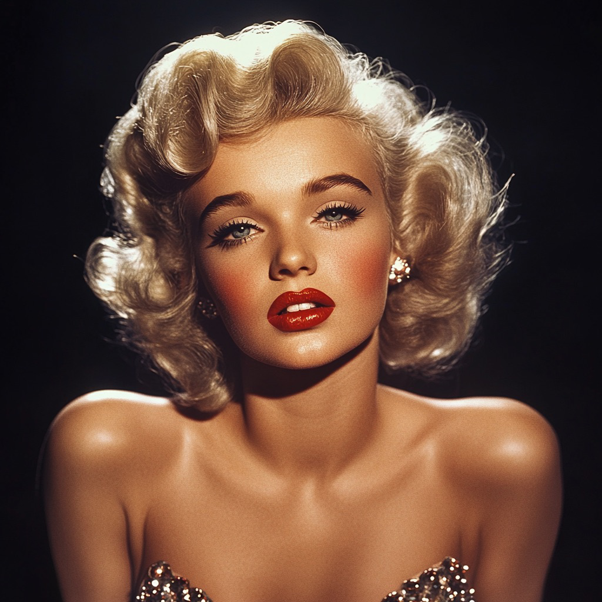
Here is a walkthrough with all the iterations I worked with for a single result.
first I started with the following images
then I make sure to align them using the starter coder and clicking the center of there eyes as that was good
reference based on front on shot
then after it was lined up I rotated it back based on the input image 1
and for this image here is the associated data ... in the order the two input images, the filtered (low then
high) images, and the hybrid image
then the final images are ... in black and white and color
these are too high resolution and thus to look proper you have to be far away but ones that look good at this
size are ... please stand around 10 feet away to see it work!
Here is the elon to mark transition ...
The code for this part is in n5.py.
here is the gaussian stack for my level 10 stack for the orange
here is the gaussian stack for my level 10 stack for the apple
here is the laplacian stack for my level 10 stack for the orange
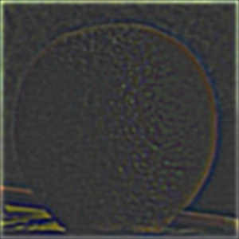
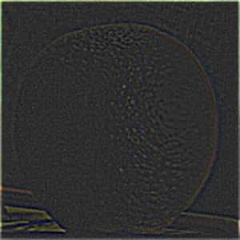
here is the laplacian stack for my level 10 stack for the apple

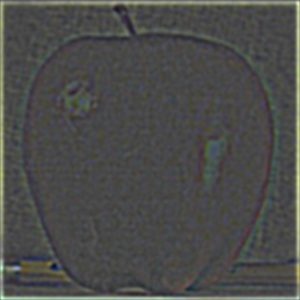
here is the blended laplacian stack for my level 10 stack for the apple and orange
here is the final blended apple and orange
this is the mask with the guassian applied at different resolutions.

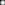

this is the img2 with the laplacian applied at different resolutions.

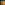
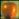
this is the img2 with the gaussian applied at different resolutions.
this is the img1 with the laplacian applied at different resolutions.
this is the img1 with the gaussian applied at different resolutions.
this is the blended img1 and img2 with the laplacian applied at different resolutions.
this is the full mask next to the final blended result.
this is the mask with the guassian applied at different resolutions.
this is the img2 with the laplacian applied at different resolutions.
this is the img2 with the gaussian applied at different resolutions.
this is the img1 with the laplacian applied at different resolutions.
this is the img1 with the gaussian applied at different resolutions.
this is the blended img1 and img2 with the laplacian applied at different resolutions.
this is the full mask next to the final blended result.
this is the mask with the guassian applied at different resolutions.
this is the img2 with the laplacian applied at different resolutions.
this is the img2 with the gaussian applied at different resolutions.
this is the img1 with the laplacian applied at different resolutions.
this is the img1 with the gaussian applied at different resolutions.

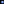
this is the blended img1 and img2 with the laplacian applied at different resolutions.
this is the full mask next to the final blended result.
this is the mask with the guassian applied at different resolutions.
this is the img2 with the laplacian applied at different resolutions.
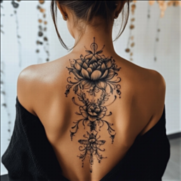
this is the img2 with the gaussian applied at different resolutions.
this is the img1 with the laplacian applied at different resolutions.
this is the img1 with the gaussian applied at different resolutions.
this is the blended img1 and img2 with the laplacian applied at different resolutions.
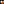

this is the full mask next to the final blended result.
now for extra credit I was able to make it even better than simple filter with the following idea.
I have code function `generate_refined_tattoo_mask` that with tuned line detection was able to map the tattoo
area the apply guassian to make it softer. Here are the results.
here we have the two original images
here we have the trivial filter that you could do by hand in photoshop
here we have the sobel/canny filter with gaussian at low darkness
here we have the sobel/canny filter with gaussian at medium darkness
here we have the sobel/canny filter with gaussian at high darkness
important to note that I also had to clean the filters throughout the process
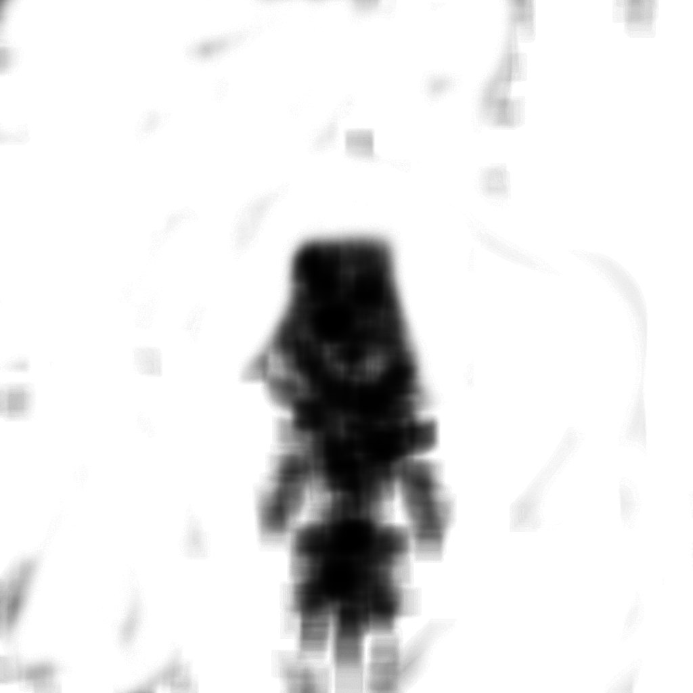
from this you can see that as I make it darker the tattto look better but then he shares issue with the
womens skin ton not matching his, so it is a balance game, I like the medium darkness one the best!
Also it is worth noting that I decided not to scale or rotate but this could easily be done so that the
entire tattoo fits on his neck and has similiar size.
this is the mask with the guassian applied at different resolutions.
this is the img2 with the laplacian applied at different resolutions.
this is the img2 with the gaussian applied at different resolutions.
this is the img1 with the laplacian applied at different resolutions.
this is the img1 with the gaussian applied at different resolutions.
this is the blended img1 and img2 with the laplacian applied at different resolutions.
this is the full mask next to the final blended result.
this is the mask with the guassian applied at different resolutions.
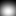
this is the img2 with the laplacian applied at different resolutions.
this is the img2 with the gaussian applied at different resolutions.
this is the img1 with the laplacian applied at different resolutions.
this is the img1 with the gaussian applied at different resolutions.
this is the blended img1 and img2 with the laplacian applied at different resolutions.
this is the full mask next to the final blended result.